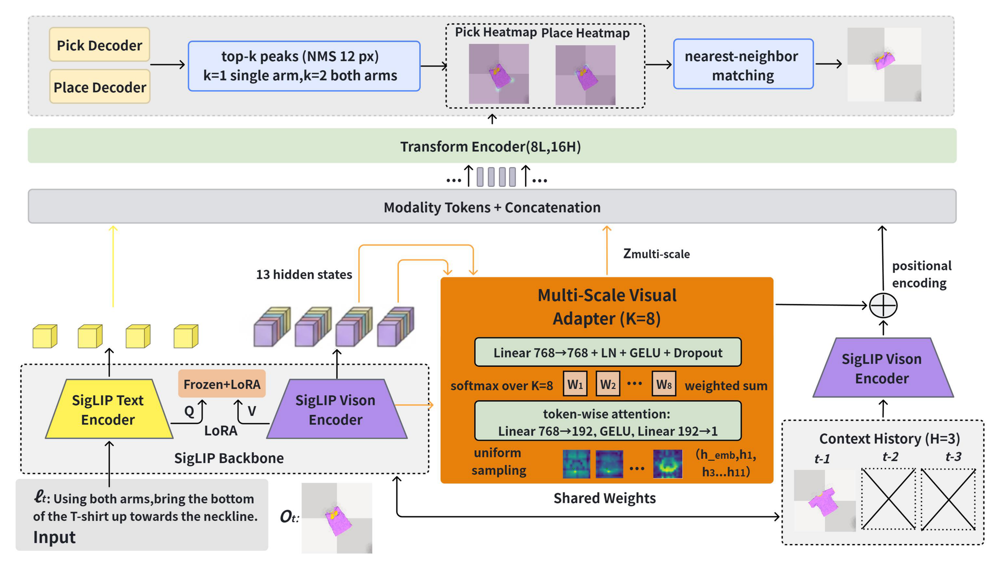
Overview of MSU-Fold. Given an RGB-D observation and a language instruction, a frozen vision-language backbone equipped with a multi-scale visual adapter produces token-level features that are fused with the instruction and decoded by a single shared pick/place heatmap head. The number of peaks read from the heatmap is determined by the folding step, so that the same weights serve both one-arm and two-arm execution. A skill library decomposes one user instruction into an ordered sequence of step instructions, which are executed in a closed loop through a swappable execution backend, in simulation and on a real robot.
How can a robot turn a single instruction such as “fold this shirt” into an entire sequence of coordinated unimanual and bimanual pick-and-place steps on cloth that self-occludes, deforms unpredictably, and offers few geometric landmarks to grasp? Recent language-conditioned policies have made substantial progress on this problem, but they typically regress dense action maps from the final-layer features of a vision-language backbone, map one instruction to one action, and handle bimanual steps with separate heads or arm-specific annotations. These choices limit localization accuracy on the low-contrast edges of deformable cloth, make bimanual demonstrations expensive to collect, and leave the decomposition of a high-level command into an ordered sequence of steps largely unexplored. We present MSU-Fold, a framework comprising three components that map one-to-one onto these gaps. A token-wise, scale-adaptive visual adapter aggregates the intermediate hidden states of a frozen vision-language backbone, replacing last-layer features as the substrate for dense action grounding. A shared pick-and-place heatmap head, supervised with bimodal mixture targets, serves both execution forms: the number of extracted peaks is dictated by each step, removing arm-specific heads and annotations. A skill library decomposes one natural-language instruction into ordered atomic steps, which are executed in a closed loop through an asynchronous inference service. On the single-arm SoftGym benchmark, MSU-Fold surpasses the strongest baseline by 12.8 and 17.2 average success points on unseen tasks with 100 and 1000 demonstrations per task. On a dual-arm benchmark with 150 demonstrations per task, it achieves 81.8% and 79.8% average success under seen and unseen instructions while executing garment folds with about 10 mm error. Transferred to a real dual-arm robot without any fine-tuning, MSU-Fold completes 13 of 15 trials spanning unimanual, bimanual, and mixed execution forms, each driven end-to-end by a single instruction.
Every demonstration is generated automatically in SoftGym and stores RGB-D observations, pixel-level pick and place keypoints, the execution form, and a per-step instruction. Black arrows denote the annotated pick→place displacement of each arm (two arrows: bimanual step, one arrow: unimanual step). Below is one annotated step for each of the nine tasks.
Every demonstration is generated automatically in SoftGym and stores RGB-D observations, pixel-level pick and place keypoints, the execution form, and a per-step instruction. Black arrows denote the annotated pick→place displacement of each arm. Below is one complete episode for each of the nine tasks, showing every step with its original instruction and execution form as stored in the dataset. Note that some steps of the single-arm benchmark carry the label multi, i.e., the execution form is not specified in the source demonstrations.
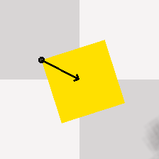
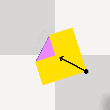
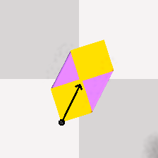
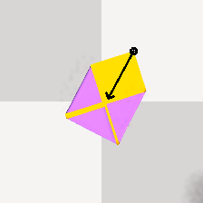
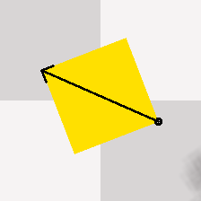
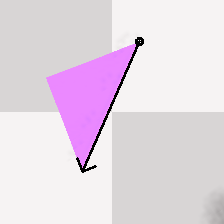
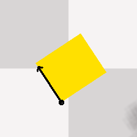
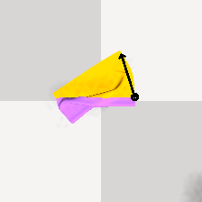
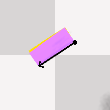
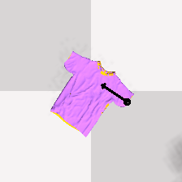
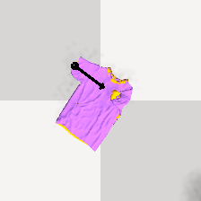
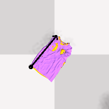
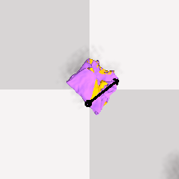
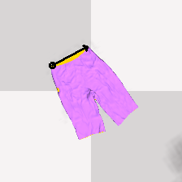
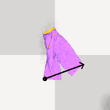
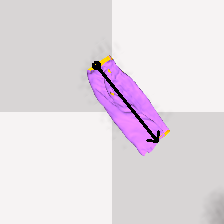
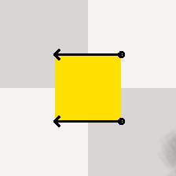
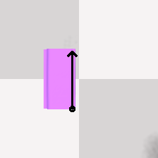
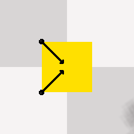
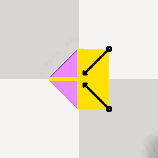
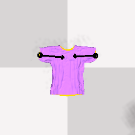
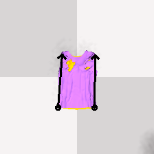
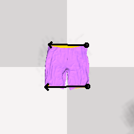
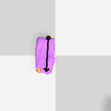
| Method | Corner | Triangle | Straight | T-shirt | Trousers | Avg | ||||||
|---|---|---|---|---|---|---|---|---|---|---|---|---|
| # demos → | 100 | 1000 | 100 | 1000 | 100 | 1000 | 100 | 1000 | 100 | 1000 | 100 | 1000 |
| Seen instructions | ||||||||||||
| CLIPort | 98.0 | 100.0 | 76.0 | 86.0 | 47.3 | 59.3 | 76.5 | 89.5 | 71.3 | 87.3 | 73.8 | 84.4 |
| Deng et al. | 93.0 | 100.0 | 46.0 | 84.0 | 44.0 | 66.0 | 82.5 | 93.5 | 76.0 | 88.0 | 68.3 | 86.3 |
| BiFold | 100.0 | 100.0 | 89.0 | 90.0 | 64.7 | 62.0 | 86.0 | 94.0 | 84.0 | 88.0 | 84.7 | 86.8 |
| MSU-Fold (ours) | 100.0 | 100.0 | 93.0 | 95.0 | 70.0 | 68.7 | 83.5 | 94.5 | 82.0 | 88.7 | 85.7 | 89.4 |
| Unseen instructions | ||||||||||||
| CLIPort | 78.0 | 69.0 | 81.0 | 88.0 | 42.0 | 57.3 | 75.5 | 87.5 | 75.3 | 88.0 | 70.4 | 78.0 |
| Deng et al. | 93.0 | 75.0 | 42.0 | 82.0 | 30.7 | 45.3 | 48.5 | 51.5 | 71.3 | 86.0 | 57.1 | 68.0 |
| BiFold | 87.5 | 63.0 | 90.0 | 89.0 | 34.0 | 51.3 | 84.5 | 93.0 | 84.7 | 87.3 | 76.1 | 76.7 |
| MSU-Fold (ours) | 78.5 | 61.5 | 95.0 | 93.0 | 59.3 | 66.0 | 88.5 | 93.0 | 86.7 | 87.3 | 81.6 | 80.2 |
| Unseen tasks | ||||||||||||
| CLIPort | 76.5 | 99.0 | 59.0 | 83.0 | 22.7 | 25.3 | 51.0 | 52.0 | 0.0 | 0.0 | 41.8 | 51.9 |
| Deng et al. | 48.5 | 95.5 | 39.0 | 82.0 | 22.7 | 24.7 | 24.0 | 40.0 | 0.7 | 0.0 | 27.0 | 48.4 |
| BiFold | 94.5 | 85.0 | 84.0 | 92.0 | 26.7 | 25.3 | 28.0 | 37.5 | 10.0 | 7.3 | 48.6 | 49.4 |
| MSU-Fold (ours) | 95.5 | 100.0 | 88.0 | 86.0 | 23.3 | 31.3 | 44.0 | 34.5 | 56.0 | 81.3 | 61.4 | 66.6 |
Bold marks the best result in each column; Avg averages the five tasks.
| Method | Half fold | Corner fold | T-shirt | Trousers | Avg |
|---|---|---|---|---|---|
| MSU-Fold (ours) | 78.0 / 68.0 | 98.0 / 100.0 | 82.0 / 75.0 | 69.0 / 76.0 | 81.8 / 79.8 |
| BiFold (retrained on our data) | 77.0 / 65.0 | 99.0 / 99.0 | 80.0 / 70.0 | 62.0 / 66.0 | 79.5 / 75.0 |
Bold marks the best result in each column; Avg averages the four tasks.
| Method | T-shirt | Trousers | ||||
|---|---|---|---|---|---|---|
| Metric → | Error (mm)↓ | mIoU (%)↑ | Succ.@IoU>80 (%)↑ | Error (mm)↓ | mIoU (%)↑ | Succ.@IoU>80 (%)↑ |
| Deng et al. † | 65.3 | 51.8 | 6.9 | 94.0 | 42.7 | 2.9 |
| BiFold † | 26.3 | 80.3 | 60.5 | 30.4 | 77.6 | 48.5 |
| MSU-Fold (ours) | 10.2 | 91.4 | 98.0 | 10.3 | 89.3 | 88.0 |
† numbers are from the BiFold paper and use a different benchmark and success definition, so they are not directly comparable to our numbers.
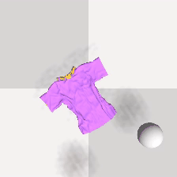
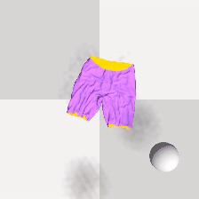
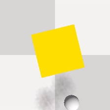
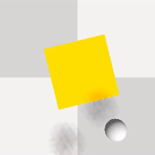
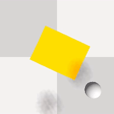
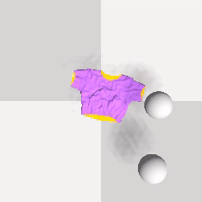
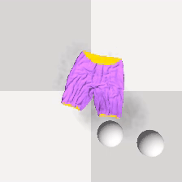
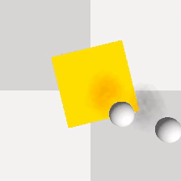
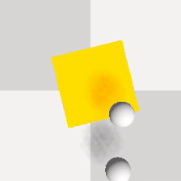
@article{msufold2026,
title = {MSU-Fold: Unified Multi-scale Heatmap Decoding and Language-grounded
Skill Decomposition for Multi-step Robotic Cloth Folding},
author = {Anonymous},
journal = {arXiv preprint arXiv:XXXX.XXXXX},
year = {2026}
}